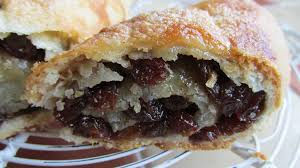
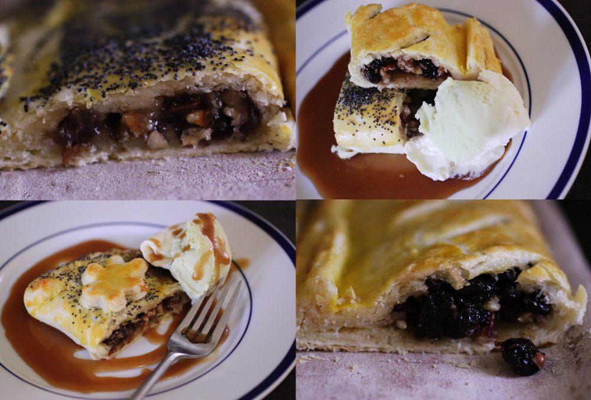

Cornish Figgy Obbin

Cornish Figgy Obbins are delicious dessert pasties! They are usually sweet and filling. Most pasties desserts are made up of leftover pasty dough. The dough is then filled with raisin and a sweet caramel like sauce. The dough is then folded over and baked. The result is a tasty and scrumptous treat!
History of Pasty Desserts

The history of Pasty desserts is quite Spectacular!! Just as Cornish pasties originated from England and were a miner's delight! So too, were the Cornish pasty desserts! Most notably were the Figgy Obbins because the were also designed to provide a way for workers and laborers to eat quickly and cleanly. They are filled with fresh fruit and syrup. They provided added bulk for the workers. Nowadays, many can find variations of these Figgy Obins. Variations include apple turnovers, and mini fruit pies!